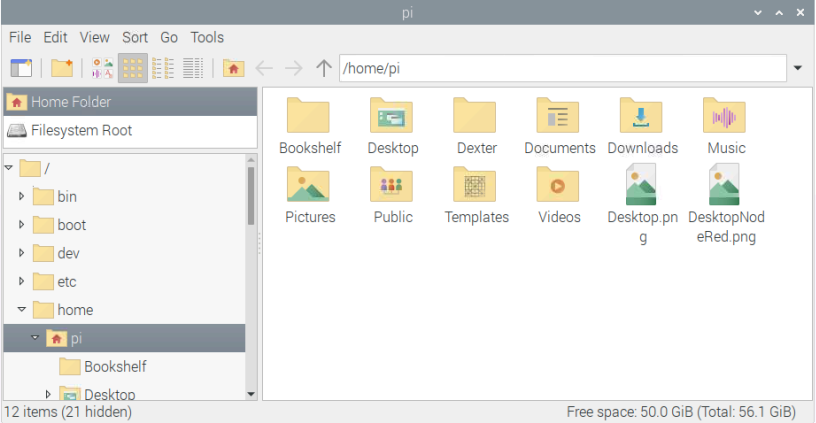
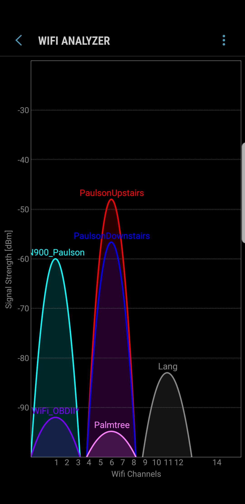

Use the course chatbot and the references provided to answer the following questions and solve the following problems.
What benefit are hardware virtualization (and simulation) tools to an organization? Note: do not only rely on the book for the answer. Consult LinkedIn Learning and Wikipedia- Hardware virtualization.
(50) 1. Briefly explain the importance of a virtual machine in managing and maintaining a Windows Server 2019 or similar environment.
(50) 2. Your boss asks you to figure out a way to run a very old program (pre-2000) that will no longer run on Windows 10. Research and figure out a way to solve her problem.
(50) 3. You want to create a local area network that protects the contents of a network server’s hard disks from disk crashes. List three different techniques for providing this protection.
Windows Server 2008 and after use Active Directory Services for its directory service. (50) 4. List three benefits of ADS
Use your laptop, in the Somsen 301 lab, connected to the HP-USB-C dock, and do the following. Make sure to login as yourself. Open a command prompt and learn about some of the most frequently used CLI-Command Line Interface commands. Hint: use the course chatbot, with a prompt such as: generate a list of the 10 most useful Windows CLI commands for use by a network administrator and provide examples of each Note: in addition to the CLI, you may also want to investigate PowerShell
generate a list of the 10 most useful Windows CLI commands for use by a network administrator and provide examples of each
(50) 5. Briefly explain the benefit to a network administrator of learning to use the CLI:
Learm about the Linux file system. You will do this on a Raspberry Pi in Somsen 301. The Raspbian Operating System is based on the Linux Debian distribution. You can work with a partner.
 Open the Terminal program by clicking the black icon in the top toolbar, fourth from left. Type mousepad newfile to open a Notepad like editor. Type 'exit' not 'q' to quit. Hint: in Debian type 'help' at the CLI to get a full list of the available commands.
mousepad newfile
(50) 6. Provide a command to return you to the home directory in Debian, no matter where you are.
Learn to use the Windows Task Manager to view running processes, services and performance. You can work with a partner.
Open the Task Manager and go to the 'Details' tab, then right-click any column and select 'CPU time'. Please note there are lots of columns listed, and 'command line' is about half way down.
(50) 7. What is the difference between the CPU and the CPU Time columns? Write your answer in the space below.
View processes running in Debian Linux on a Raspberry Pi in Somsen 301. You can work with a partner.
Start and connect to your Raspberry Pi. Click the Raspberry icon in the upper-left corner, click 'Accessories' then click 'Task Manager'. Click the Internet icon in the top toolbar to start the 'Chromium' browser and view changes to CPU utilization. Click the fourth icon from the left in the top toolbar to open a terminal window.
Review the information displayed after entering the 'top' command in the terminal window. (50) 8. Use the Snipping Tool to make a screenshot of the Terminal window displaying the results of the top command. Make sure to include at least the top 10 rows. Save the screenshot as "Ex1" in your ' ' folder. You will be combining screenshots from several exercises at the end of this assignment, just as you did in Formative00-PDF File Creation.
Map a drive letter to a folder Professor Paulson created on a network server. You can work with a partner. You can also attempt this from an off-campus location, as long as you establish a Cisco AnyConnect vpn connection. Make sure to use your WSU laptop.
Read the project, and then map one of your laptop drive letters (likely one such as X:, Y: or Z:) to the unc path: \\mispgp2\MIS452fall2024
\\mispgp2\MIS452fall2024
Open Windows File Explorer and make a screenshot of the mapped drive. You should see a Readme.txt file, feel free to open and read it.
(100) 9. Use the Snipping Tool to make a screenshot of Windows File Explorer showing the mapped drive window. Save the screenshot as "Ex2" in your ' ' folder. You will be combining screenshots from several exercises at the end of this assignment, just as you did in Formative00-PDF File Creation.
You are creating a network at home that consists of multiple computers, a high-quality printer, and a router with access to a high-speed Internet connection. (50) 10. Is there a particular desktop operating system that can be installed on each computer that will optimize the operations of your home network?
What is War Driving? Ask the chatbot and see Wikipedia. As a network engineer or administrator why should you care about war driving?
Use Xirrus 1.2 or later, available in the /ReadOnly/Summative09 folder of the class network drive or OneDrive. Use Vistumbler 10.6.5 or later, also available in the /ReadOnly/Summative09 folder of the class network drive or OneDrive. Or use whatever software is recommended by the course chatbot.
Download and install Xirrus, review the above material, then answer the following questions. Feel free to work in groups.
Note: cannot use LT-20 on Win x64, skip GPS part of this assignment: To use the Earthmate LT-20 GPS unit, you will need to install a USB to Serial port converter, from the manufacturer, Delorme: Serial Port Emulator The .exe file is at: \\store\classes\20113000719\ReadOnly\SerialPortEmulator This is what NetStumbler 0.4 looks like when running, it is available, but may not work with your laptop wireless NIC:
(50) 11. What are typical uses of Xirrus, NetStumbler, Vistumbler or Xirrus? Hint: chatbot and help files are useful sources of information
Use the table below as a template, create an Excel spreadsheet to gather the following data. If you have GPS you can use Vistumbler and a GPS receiver record the following information on at least 10 Wireless Access Points in the Winona area. Or you can download an app to your smartphone and try that. Feel free to go further than Winona. You are encouraged to work with your MIS452 group members. But each student must submit a copy of their data.
Latitude (d m.mm)
(150) 12. Save your file 'Ex8WiFi.xlsx' in your ' ' folder.
Work with someone in class who has a smartphone. Search the internet for a Android or Apple WiFi scanner app for wireless networks, such as: LifeWire top 8 free Android wireless networking apps or:
Life Wire Top iOS Wireless networking apps Download and install the app of your choice. I installed OpenSignal(great for cell phone signals) and WiFi Analyzer on my Android Device. 
(50) 13. Use the Snipping Tool to make a screenshot of Vistumbler running on your laptop. Save the screenshot as "Ex8Vis" in your ' ' folder. You will be combining screenshots from several exercises at the end of this assignment, just as you did in Formative00-PDF File Creation.
(50) 14. Use whatever means is necessary to take a screenshot of a WiFi analyzer or OpenSignal type program on your cell phone and move it to your laptop. Save the screenshot as "Ex8Signal" in your ' ' folder. You will be combining screenshots from several exercises at the end of this assignment, just as you did in Formative00-PDF File Creation.
There are no Packet Tracer Labs for this chapter.
Use a web browser to verify that you have published your website to https://classes.winona.edu/... Check that your name, StarID, email, class, semester, section and all of your answers are correct and visible. From the menu choose File>Print... and using "Microsoft Print to PDF" save a copy of this assignment as a .pdf file in your ' ' folder.
(50) 15. Save your file 'WebPage.pdf' to the ' ' folder.
Create one .pdf (portable document format) file from the screenshots that you have taken by following these steps.
(50) 16. Save your file 'ScreenShots.pdf' in your ' ' folder.
Use PDFill to merge the WebPage.pdf file with the ScreenShots.pdf file, and save it as 'Summative09.pdf' in your ' ' folder.
(50) 17. Upload your file 'Summative09.pdf' to the D2L 'Summative09' Assignment folder.
Use a browser to view your completed and published website at: https://classes.winona.edu/... Ensure that you have linked this assignment on your home page. Note that your screenshots do not have to be completed to perform this step.